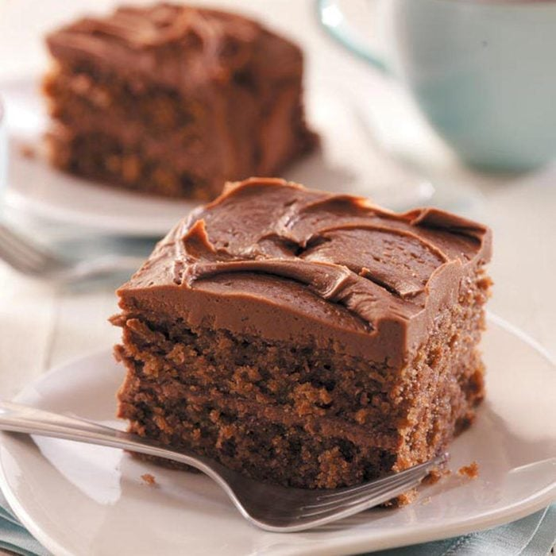

How to create a chocolate cake!
Hungry for an amazing cake? This guide will show you how to bake a chocolate cake!

Ingredients needed:
- 1/4 cup baking cocoa
- 1 cup water
- 1 cup canola oil
- 1/2 cup butter, cubed
- 2 cups self-rising flour
- 2 cups sugar
- 1/2 cup buttermilk
- 2 eggs
For Frosting:
- 1/2 cup butter, cubed
- 1/4 cup baking cocoa
- 1/4 cup milk
- 4 to 4-1/2 cups confectioners' sugar
- 1 teaspoon vanilla extract
Instructions:
- In a small saucepan over medium heat, combine cocoa and water until smooth; add the oil and butter. Bring to a boil; cook and stir for 1 minute. Remove from the heat.
- In a large bowl, combine flour and sugar; gradually add cocoa mixture, beating until well combined. Beat in buttermilk and eggs.
- Pour into a greased 15x10x1-in. baking pan. Bake at 350° for 28-30 minutes or until a toothpick inserted in the center comes out clean. Cool on a wire rack.
- Cut cake into four 7-1/2x5-in. rectangles. Wrap two of the rectangles separately in foil; refrigerate or freeze. Set the other two rectangles aside.
- For frosting, in a small saucepan, combine the butter, cocoa and milk. Bring to a boil; cook and stir for 1 minute (the mixture will appear curdled).
- Pour into a large bowl. Gradually add confectioners' sugar and vanilla; beat until frosting achieves desired spreading consistency. Spread frosting between layers and over the top and sides of cake.
- Take a few pieces of your cake and enjoy!
Explore the tasty recipies below!